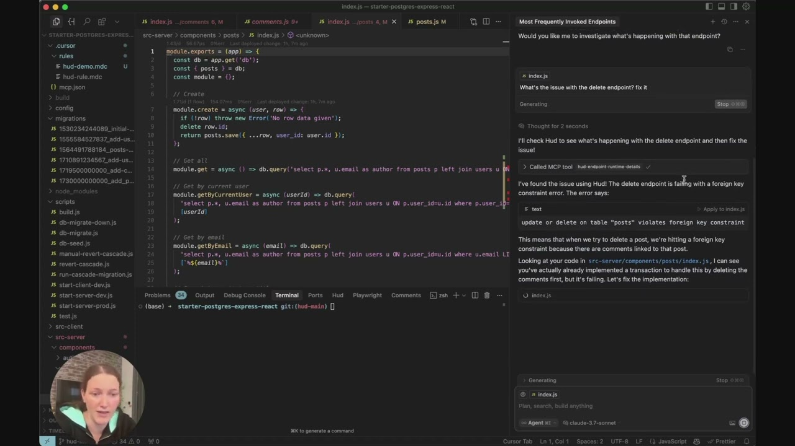

THE FIRST
Runtime Code Sensor
Hud detects errors and performance degradations in production
with the deep forensic context needed to fix them with AI
with the deep forensic context needed to fix them with AI


Where code meets reality
Install once. No config. Zero maintenance.
Understand code behavior with function level data
Hud gathers errors and performance data at the service and function level. It connects, at runtime, the business impact and the root cause in the code. Engineers use this data in the IDE to understand how their code behaves in reality.
Automatic production issue detection
Without needing any configuration, Hud detects errors and performance degradations in production, connecting the service-level issues with the function-level root causes, and collects all relevant forensic data needed resolve them.
Quickly solve production issues with AI
Hud’s context is perfect for your favorite agent to quickly understand the impact, consider different solutions and assess their risk. Paste the data or use Hud’s MCP server to save countless debugging hours.
Understand code behavior with function level data
Hud gathers errors and performance data at the service and function level. It connects, at runtime, the business impact and the root cause in the code. Engineers use this data in the IDE to understand how their code behaves in reality.
Automatic production issue detection
Without needing any configuration, Hud detects errors and performance degradations in production, connecting the service-level issues with the function-level root causes, and collects all relevant forensic data needed resolve them.
Quickly solve production issues with AI
Hud’s context is perfect for your favorite agent to quickly understand the impact, consider different solutions and assess their risk. Paste the data or use Hud’s MCP server to save countless debugging hours.
Production aware by design
Function-level data
Hud was built with a fresh new approach by a team of OS internals experts to follow the behavior of each function, so whatever code the AI agent is reasoning over - it has ubiquitous production data.
Connecting business-to-code in runtime
Hud connects business-level symptoms to function-level root causes in real-time. Hud detects performance degradations and errors at the endpoint level (HTTP, Queues, etc) - coupled with the root cause in the code that led to them.
Automatic post-deployment monitoring
Hud automatically detects deployments, and which specific code changed in production. Once a deployment is detected, Hud closely monitors differences in behavior of endpoints and function vs. previous versions, to quickly find degradations.
Zero configuration
Hud installs in a minute as an SDK, no configuration required. Hud works out-of-the-box with opinionated (and configurable) alerts, doesn’t require any maintenance as the codebase evolved, and delivers immediate value in complex existing codebases.
Trusted by engineers.
Human & artificial alike.
Hud runs on millions of services across massive production environments, with negligible overhead.
-
 Hud’s ability to automatically detect root causes and provide this context in the IDE makes a huge difference!Benny Keinan, VP R&D
Hud’s ability to automatically detect root causes and provide this context in the IDE makes a huge difference!Benny Keinan, VP R&D
-
Hud is a truly remarkable platform - every engineer on the team can now understand what’s going on in our production without leaving their IDE.Nir Rubinstein, Chief Architect

See Hud in action

Related articles
-

AI in the Trenches: What We're Really Learning About Coding with Machines
May Walter reflects on the real lessons from InfoQ’s “AI in the Trenches” panel - where the future of software development is already unfolding.